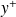
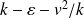

Influence of the thermal and RANS closures on walls heat transfers computations
ECOS 2017
Abstract :
This study deals with the heat transfers calculations between the internal walls of a duct and a
non-isothermal turbulent flow inside this later on. The departure point for this work is the appearance
of an asymmetry in the velocity fields, implying consequently a modification of the temperature profiles
[1, 2]. Therefore, the fluid properties can be modified and the corresponding Reynolds numbers and 
values can be significantly different from one side to another. We will first present the fluid and thermal
modeling retained, using both an EB-RSM model with thermal GGDH closure and a 
model, i.e. two elliptic models either at order two or order one. Then, the heat transfers at the walls
are computed on a 3D geometry consisting of a T–junction between a cylindrical pipe and a larger
rectangular duct, whose flow are turbulent yet with different velocities. This type of devices corresponds
usually to a part of a larger one involved in nuclear power plants.
Keywords : RANS, EB-RSM, , thermal modeling, GGDH, wall heat transfers
[1] Sylvain Serra, Adrien Toutant, Françoise Bataille, and Ye Zhou. High-temperature gradient effect on a turbulent channel flow using thermal large-eddy simulation in physical and spectral spaces. Journal of Turbulence, 13 :1–25, 2012.
[2] Sylvain Serra, Adrien Toutant, and Franc¸oise Bataille. Thermal large eddy simulation in a very simplified geometry of a solar receiver. Heat Transfer Engineering, 33(6) :505–524, 2012.